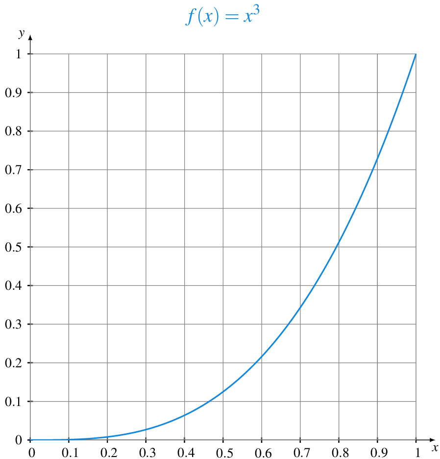

Sumas de Riemann
El cálculo de áreas encerradas por regiones del plano curvas ya fue estudiado en la antigua Grecia. Una de las técnicas desarrolladas en aquella época fue el método por agotamiento, qué básicamente consistía en aproximar el área de la región estudiada, inscribiendo en ella figuras geométricas de área conocida.
En este taller trataremos de usar esta idea, usando sumas de Riemann, para aproximar el área que queda entre la gráfica de una función \(f(x)=x^3\) y el eje \(X\), en el intervalo \(I=[0,1]\).
Para ello hay que seguir los siguientes pasos:
Dar una aproximación por defecto y por exceso calculando las sumas inferior y superior de Riemann para particiones de \(I\) en \(n\) subintervalos de igual tamaño, para \(n=2, 5\) y \(10\).
Calcular la sumas inferior y superior de Riemann para particiones de \(I\) en \(n\) subintervalos de igual tamaño.
Calcular la integral inferior de Riemann mediante el límite cuando \(n\) tiende a \(\infty\) de la expresión obtenida en el apartado anterior para la suma inferior de Riemann.
Calcular la integral superior de Riemann mediante el límite cuando \(n\) tiende a \(\infty\) de la expresión obtenida en el apartado anterior para la suma superior de Riemann.
Calcular el área encerrada entre la gráfica de \(f\) y el eje \(X\) en el intervalo dado.
Generalizar el proceso anterior para calcular el área encerrada entre la gráfica de \(f\) y el eje \(X\) en un intervalo cualquiera \(I=[a,b]\).
